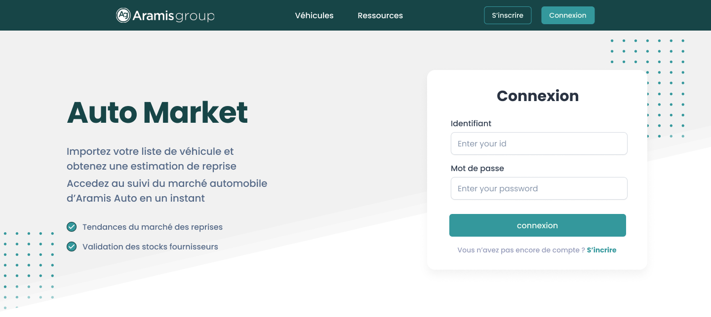

à propos :
Je suis Pierre, developpeur back en alternance chez Experis et en 4ème annèe à la Web School Factory

Formations :
1 an en licence d'histoire à la fac de Paris X Nanterre 4 ans de formation à la Web School Factory
Expériences:
3 mois de stage chez Holy-dis en tant qu'assistant marketing, 6 mois d'alternance chez Experis
Compétences:
Wordpress, HTML/CSS, Symfony, SQL
Diplome:
Bac S, Certification voltaire 700 points, bientôt master WSF
Hobbies:
Handball, sport de manière générale, astronomie, lecture, jeux vidéos, gastronomie et bon vin, voyages